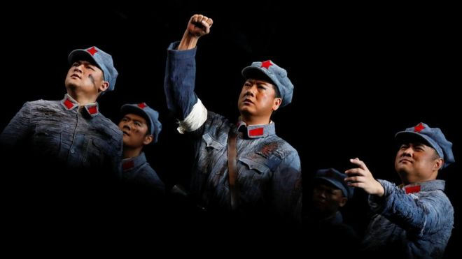
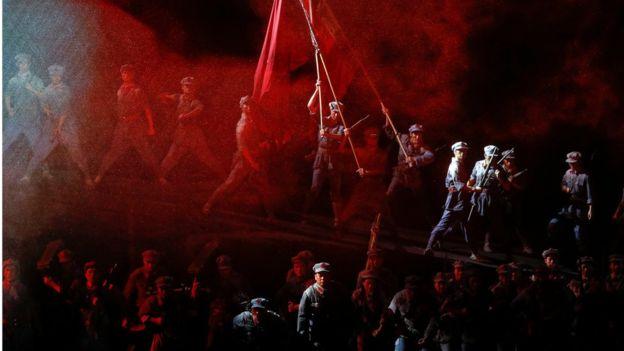
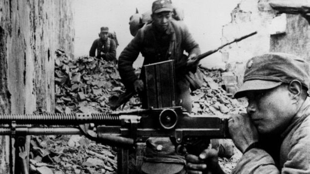
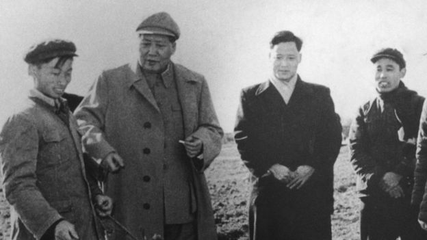

中国建军90周年：你可能不知道的中共军史
文章来源:http://www.bbc.com/zhongwen/simp/chinese-news-40776751
发稿时间:2017/7/31

中国国家大剧院上演歌剧《金沙江畔》，纪念“建军”90周年 (REUTERS)
中国官媒连日来盛赞解放军建军90年来为国家民族立下的"卓著功勋"。但若只读官媒，有些军史你可能还没听说过。
8月1日（周二）是解放军建军90周年纪念日，官媒早已开始大肆造势，盛赞"人民军队" 为"民族独立和人民解放"以及"国家富强和人民幸福"建立的"卓著功勋"。
但官方的史观都是站在共产党的立场上解释历史，一切中共不喜欢的叙述都被视为"历史虚无主义"。
7月21日出版的《解放军报》发表文章，强调"决不容许历史虚无主义歪曲党史国史军史"，维护官方版本的党史军史是具有"战斗性"的工作。
文章说："站在党的立场就是站在人民的立场"，"史学工作者和理论工作者要增强使命感、责任感，强化党史、国史、军史工作的战斗性，主动发声、
占领阵地，大张旗鼓地宣传我党我军的光荣历史"。
那么，不太"光荣"的历史呢？只看官媒就不一定了解了。下面我们就为您补充几个知识点。
"武装保卫苏联"

中共当时是共产国际的一个支部，因此红军曾喊出“武装保卫苏联”的口号。图为歌剧《金沙江畔》场景。(REUTERS)
中共本来不是中国的本土政治组织，而是苏联控制的共产国际中国支部，初期的活动经费主要来自苏联，是不折不扣的"外国势力代理人"。
因此，在中共建立"红军"两年后，中国和苏联发生冲突时，中国共产党毫不犹豫地站在了苏联一边。
1929年7月，由于国民政府试图废除满清与列强签订的不平等条约，东北边防司令长官张学良宣布收回苏联控制的中东铁路路权。
苏联红军因此入侵中国东北，击败东北军，不仅维持了对中东路的控制，还强占了黑龙江上的黑瞎子岛。
在中东路事件中，中共不仅没有谴责侵略者，反而发表宣言抨击国民党"向苏联进攻"，呼吁"拥护工人阶级的祖国苏联"。
共产国际因此事把中共称为"国际主义的模范"，并盛赞中共"在这种困难的环境中，在群众的前面，提出'武装保卫苏联'的口号……号召并组织群众去进行英勇的斗争，
去反对自己的政府、中国的军阀和国民党"。
赣州战役与淞沪抗战
在中东路事件中，中共尽管有意武装保卫苏联，但其红军尚不具备足够实力。然而，两年多以后，红军在另一场中外冲突中起到了不可忽视的作用。
1932年1月28日，上海爆发"一二八"事变，日本海军陆战队对上海的中国驻军发动攻击，国军十九路军奋起迎战。此战延续到3月3日才结束，史称"第一次淞沪抗战"。

中国抗日战争中的国军士兵。共产党和国民党对于中国抗日战争的历史描述长期存在争议。(GETTY IMAGES)
中共将此事变视为打击国民政府、发展自身力量的好机会。1月31日，中共中央发表宣言，呼吁上海工人"夺取武装"，不仅反对日本进攻，也要"推翻国民党的统治"，
还鼓动国军士兵"把子弹向着帝国主义国民党开放"。
"一二八"抗战开始时，红军正准备攻打江西赣州。红军并未因国难当头而暂时停止内战，而是于2月4日进抵赣州附近，并于23日开始猛攻。3月7日，红军在遭受重创后撤退。
红军发动的"赣州战役"与"一二八"淞沪抗战几乎同时。国民政府认为，中共乘日军侵略之机猛攻赣州，牵制了本应增援上海的国军部队，等于帮助日寇。
中共则说，这不过是国民党"攘外必先安内"的借口。
但无论如何，中共明知日军入寇，却并未以民族大义为重，而是内战优先，不仅鼓动前线抗日士兵叛变，还同时发动大型的内战战役，应是不争的事实。
"让日本多占地，才爱国"
红军"反围剿"失利后"长征"到西北，以期打通与苏联的通道，取得外国势力的援助。
尽管打着"北上抗日"、建立"抗日民族统一战线"的旗号，但中共内部的抗战方针更强调保存和发展自身实力。
"西安事变"后，国共两党经过谈判，将红军改编为"国民革命军第八路军"。改编后，毛泽东立即致电朱德、彭德怀等人，强调"红军此时是支队性质，不起决战的决定作用"，
因此要搞"山地游击战"，"分散兵力，而不是以集中打仗为主"。
同时，毛泽东强调，尽管八路军名义上已是国军的一部分，但实际上仍要"独立自主"，不能真正听命于国民政府。
根据曾担任毛泽东秘书的李锐编著的《庐山会议实录》，毛泽东在1959年的庐山会议上对中共在抗战时期的策略做了相当露骨的概括。
毛泽东回顾说："一些同志认为日本占地越少越好，后来才统一认识：让日本多占地，才爱国。否则变成爱蒋介石的国了。国内有国，蒋、日、我，三国志。"

彭德怀因批评“大跃进”，在1959年的庐山会议上受到毛泽东的激烈批判。图为毛泽东1958年在"大跃进"期间视察浙江。(GETTY IMAGES)
百团大战成彭德怀"罪状"
中共对其抗战战绩的宣传重点集中在所谓"平型关大捷"和"百团大战"这两场战事上。而发动这两场战事，实际上都违反了毛泽东的抗战原则，并非中共中央的本意。
1937年9月25日，在以阎锡山率领的国军为主力的平型关战役期间，林彪率领的八路军115师袭击并歼灭了一个几百人的日军辎重部队。
这起小规模战斗被中共渲染为"平型关大捷"。
战斗当天，毛泽东致电中共中央北方局，强调"整个华北工作，应该以游击战争为唯一方向"，实际否定了林彪的作战方针。
1940年下半年，为阻碍日军的扫荡，彭德怀策划指挥了一场破坏交通线的大规模"破袭战"，后来被称为"百团大战"。
百团大战是中共在抗战期间唯一的一次较大规模的对日作战，但彭德怀却因此遭到中共内部的批判，因为百团大战暴露了中共实力，"帮了国民党蒋介石的忙"。
延安整风期间，毛泽东批评说，对百团大战的宣传"暴露了我们的力量，引起了日本侵略者对我们力量的重新估计，使敌人集中力量来搞我们"。
彭德怀被迫在1945年的华北工作座谈会上做了检讨，承认自己"很明显是民族义愤模糊了阶级立场"。
此后，在1959年庐山会议上以至"文化大革命"中，"百团大战"都被作为彭德怀反对毛泽东军事路线的一大罪状。
陕北八路军种鸦片贩毒
在抗日战争期间，官方版本的党史强调的另一件大事是所谓"大生产运动"。
官方的说法是，在毛泽东"自己动手，丰衣足食"的号召下，陕甘宁边区开展了一场"轰轰烈烈的军民大生产运动"，基本实现了经济自给自足。
多年来，一些海外学者和作家指出，中共陕甘宁边区的经济命脉主要在于鸦片的种植和贩卖。

中共十分重视对党史和军史的宣传。图为解放军士兵参观在中国人民革命军事博物馆举办的军史展览。(AFP)
经常被引用的信息来源之一是抗战时共产国际驻延安联络员兼塔斯社记者彼得·弗拉基米洛夫的《延安日记》。
弗拉基米洛夫在日记中引述任弼时的话说："毛泽东同志说，在目前形势下，鸦片是要起打先锋的、革命的作用，忽视这点就错了。政治局一致支持中共中央主席的看法。"
近年来，中国大陆的敢言媒体也证实，陕北八路军确实曾经生产和贩卖鸦片。
由一批中共自由派老干部支持的《炎黄春秋》杂志2013年8月刊文《延安时期的"特产"贸易》，引用内部资料证实，种植罂粟、贩卖鸦片的行为，
延安时期党政军学、部队机关多有参与。
由郭兰英演唱的著名歌曲《南泥湾》在中国大陆传唱甚广，其中歌颂王震领导的359旅是大生产"模范"。
但《炎黄春秋》的文章引用中共内部资料揭示，359旅在南泥湾既卖过鸦片，也种过罂粟。而且这在八路军各部队是相当普遍的现象。
文章说，种鸦片的地区，在中共历史上不止于陕甘宁边区，时间也不限于延安时期，比如所谓"解放战争"时期曾在东北大量种植罂粟。